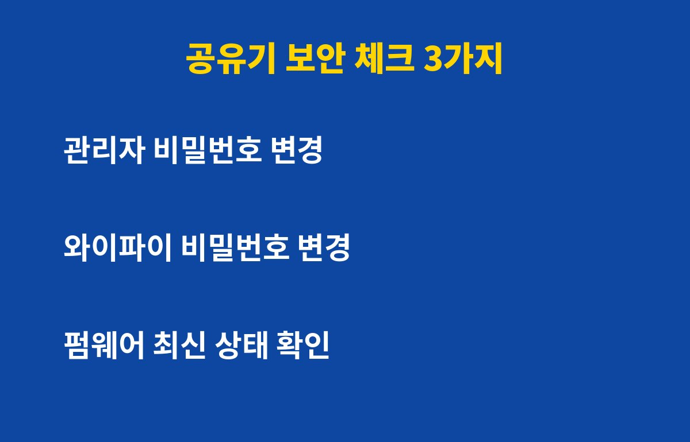
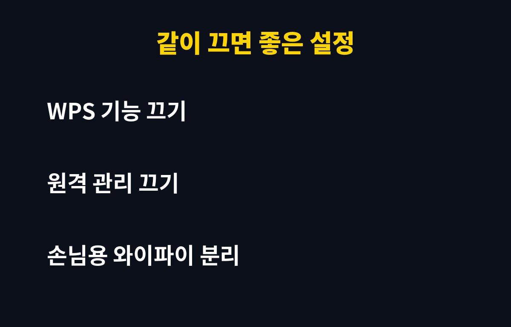

공유기 비밀번호를 처음 설치할 때 그대로 쓰고 있다면, 지금 바로 바꾸는 것이 가장 안전해요. 집에 인터넷이 들어오는 입구가 바로 공유기라서, 여기가 뚫리면 폰·노트북·TV가 한꺼번에 위험해질 수 있어요.
특히 설치 기사님이 정해준 초기 비밀번호를 그대로 쓰는 분이라면 더 그래요. 그런데 와이파이 비밀번호만 바꾸면 끝일까요? 오히려 그것만 바꾸고 안심하는 분이 많아요. 이유는 아래에 있어요.
공유기 비밀번호, 와이파이 말고 또 있다고요?
네, 비밀번호는 두 종류예요. 하나는 우리가 폰에 입력하는 와이파이 비밀번호, 다른 하나는 공유기 설정 화면에 들어갈 때 쓰는 관리자 비밀번호예요. 관리자 비밀번호가 admin처럼 흔한 값 그대로면, 같은 와이파이에 접속한 사람이 설정을 바꿀 수 있어요.
관리자 화면에서는 인터넷 주소 설정까지 바꿀 수 있어서, 엉뚱한 사이트로 연결되게 만드는 수법도 가능하다고 알려져 있어요. 그래서 두 비밀번호를 모두 따로 바꿔두는 게 좋아요.
5분이면 끝나는 점검, 어디서부터 할까요?

먼저 공유기 뒷면 스티커에 적힌 접속 주소를 인터넷 주소창에 넣고 관리자 화면으로 들어가요. 그다음 관리자 비밀번호를 길고 새로운 것으로 바꾸고, 와이파이 비밀번호도 다른 서비스와 겹치지 않게 바꿔요. 마지막으로 펌웨어 업데이트가 있는지 확인하면 기본 점검은 끝나요.
같이 끄면 좋은 설정, 뭐가 있나요?

아래 표처럼 쓰지 않는 기능은 꺼두는 게 안전해요. 모델마다 메뉴 이름은 조금씩 다를 수 있어요.
| 항목 | 권장 | 이유 |
| 관리자 비밀번호 | 직접 변경 | 초기값은 쉽게 추측돼요 |
| 와이파이 비밀번호 | 길게 변경 | 이웃의 무단 접속 방지 |
| WPS 기능 | 끄기 | 간편 연결이 약점이 될 수 있어요 |
| 원격 관리 | 끄기 | 밖에서 설정 화면 접근 차단 |
| 펌웨어 | 최신 유지 | 알려진 보안 구멍 보완 |
| 손님용 와이파이 | 분리 사용 | 손님 기기와 내 기기 분리 |
비밀번호를 바꾸면 불편해지지 않을까요?
바꾸고 나면 기존에 연결된 기기들이 한 번 끊겨요. 폰, TV, 스피커 등에서 새 비밀번호를 다시 입력해야 하니 시간 여유가 있을 때 하는 게 좋아요. 번거롭지만 한 번만 해두면 오래 안심할 수 있어요.
또 하나, 새 비밀번호는 휴대폰 메모나 비밀번호 관리 앱에 저장해두세요. 잊어버리면 공유기를 초기화해야 하고, 그러면 인터넷 설정을 처음부터 다시 해야 해요.
오늘 저녁에 딱 5분만 투자해서 공유기부터 점검해 보세요. 도움이 되셨다면 구독해 주세요, 생활 속 IT 보안 꿀팁을 계속 알려드릴게요.
기사·공식 발표 기준이며 출시·가격 정보는 바뀔 수 있어요.